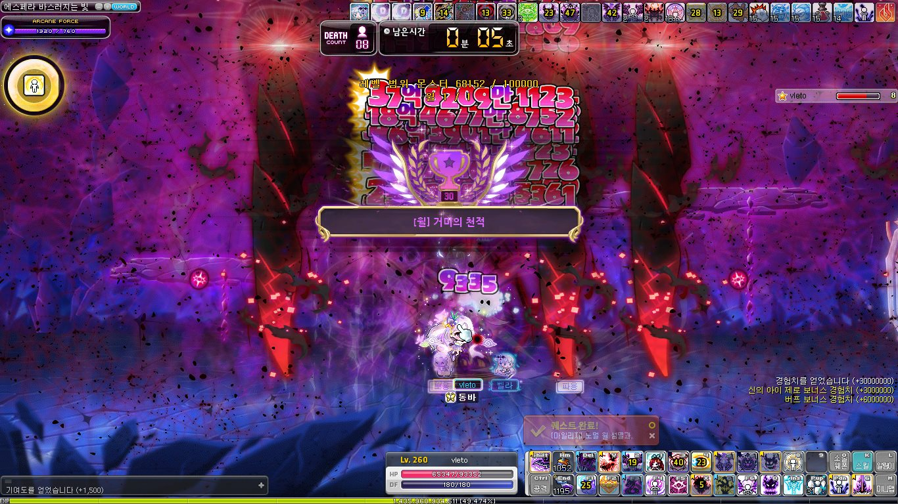

- 어웨이크닝
- 오르트로스
- 요르문간드
어웨이크닝 - by. sh lee
*수로 빌드

입장
- 121초 : 시작 직전 인피니티포스, 블루블러드, 엔버링크
- 118초 : 요르문 설치, 웨폰 사용, (슬래시1 - 임팩트6~7, - 서버러스 1)사이클 딜
- 엔버링크하고 웨폰이 끝나면 시드링 체인지 (웨폰 to 리레)
- 74초 : 어웨이크닝
- 60초 : 하이퍼, 고양이
- 51초 : 스인미
- 42초 : 오르트로스 이계여신
- 19초 : 엔버링크
- 17초 : 요르문간드
- 15.5초 : 리레 ( 이 타임에 일필 무조건 터짐 )
- 어웨끝나면 : 베인